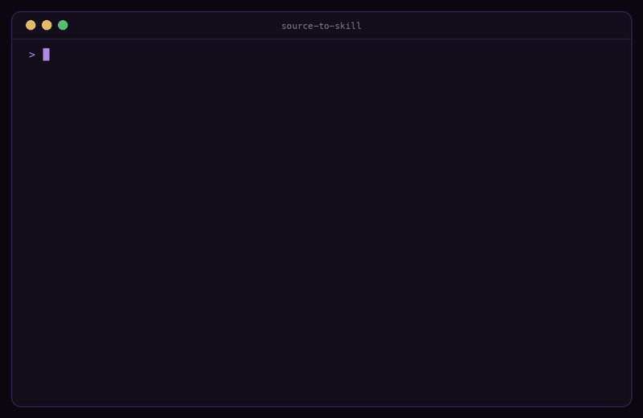

YouTube videos
Captions split by the video's own chapters. Captionless videos fall back to local Whisper.
segments/ · every answer links &t=
One command distills the things you watch, listen to and read into an Agent Skill your coding agent loads on demand. Every video answer links the exact second. No API keys, no cloud, no vector database.
/plugin marketplace add michalstrnadel/source-to-skill/plugin install source-to-skill@source-to-skillThen: /source-to-skill <url-or-file>
uvx --from git+https://github.com/michalstrnadel/source-to-skill source-to-skill installInstalls the skill into the skills folder your agent reads. Then: /source-to-skill <url-or-file>
git clone https://github.com/michalstrnadel/source-to-skillln -s "$PWD/source-to-skill/skills/source-to-skill" ~/.agents/skills/Use ~/.claude/skills, ~/.copilot/skills or ~/.agents/skills.
00:00 Demo
/your-skill <question> answers with citations and &t= links.
03:12 Real run
A 3Blue1Brown lecture becomes a skill in Claude Code. Ask it anything afterwards and the answer cites the transcript with a link that jumps to the exact second of the video.
05:40 Supported sources
Documentation scrapers cover API docs. source-to-skill covers learning content: lectures, talks, interviews, papers and books, each with the structure that fits it.
Captions split by the video's own chapters. Captionless videos fall back to local Whisper.
A whole course or channel, one lesson per video. update adds only new lessons.
Whole shows from their RSS feed, Apple Podcasts episodes, mp3 URLs, local files, and 1000+ sites via --type audio.
arXiv URLs download automatically. Academic sections are detected in any PDF.
EPUB with the standard library alone; PDF books take chapters from the outline.
Readable-article extraction drops navigation and footer chrome.
README and docs/ from one tarball download. No clone.
Several sources become one skill that also records where they disagree.
09:05 How it works
Python does the parts that should never vary. The model you already pay for does the distilling, following one instruction file per source type.
SKILL.md stays near 4k tokens. Segment, lesson and chapter files load only when a question needs them, so a two-hour lecture doesn't cost two hours of tokens per question.
Frameworks, decision rules, concrete numbers and quotes, shaped per source: methods and limitations for papers, chapters for books, lessons for courses.
Extraction and Whisper transcription run on your machine. Skills are plain Markdown folders you can read, edit, commit and share.
12:30 Compare
Because you'd pay for the whole thing on every question, and lose it at the end of the session. Here is how the common options stack up.
| Capability | source-to-skill | NotebookLM | RAG pipeline | Pasting the transcript |
|---|---|---|---|---|
| Runs in your coding agent | Yes, loads as a skill | Separate web app | Only if you wire it in | Yes |
| No API keys or extra accounts | Uses the agent you have | Google account, cloud upload | Embedding API, vector store | Yes |
| Timestamp deep links | Every answer, exact &t= second |
Passage citations | If you build them | No |
| Token cost per question | ~4k + only the files needed | Not in your agent | Retrieved chunks, plus infra | The full transcript, every time |
| Offline-capable extraction | Local files, local Whisper | Cloud only | With local models | Depends on your agent |
| Persists across sessions | Installed skill folder | In the notebook | In the index | Gone with the context |
| Open source | MIT | No | Varies | Not applicable |
Scroll the table sideways to see every column.
15:48 FAQ
Install the plugin in Claude Code (/plugin marketplace add michalstrnadel/source-to-skill, then /plugin install source-to-skill@source-to-skill) or run uvx --from git+https://github.com/michalstrnadel/source-to-skill source-to-skill install. Then run /source-to-skill with the video URL. The extractor pulls the captions, splits them by the video's own chapters and shows a token estimate; your agent writes a SKILL.md plus one segment file per chapter. Every answer links back to the exact second with &t=. Videos without captions fall back to local Whisper transcription.
Yes. Pass an Apple Podcasts link, a direct mp3 URL, a local audio or video file, or any page yt-dlp supports (Vimeo, SoundCloud, TED and 1000+ more) with --type audio. It is transcribed locally with Whisper (mlx-whisper on Apple Silicon, faster-whisper elsewhere), so no API key is needed, and the transcript becomes a timestamped skill Claude Code loads on demand.
source-to-skill fills that role inside your coding agent. Instead of uploading sources to a separate cloud notebook, it turns them into Agent Skills in your skills folder, so Claude Code, Copilot CLI or Amp can consult a lecture, paper or book while it works on your code. It is open source, runs locally and needs no extra account.
Run /source-to-skill with an arXiv URL, a PDF path or an EPUB file. Papers become a skill with a TL;DR plus methods.md, findings.md, limitations.md, glossary.md and citations.md. Books (EPUB, or PDF with --type book) become a chapter index with one chapter file loaded only when a question needs it, plus a glossary and cheatsheet.
Yes. A playlist or channel URL becomes a course skill: a lesson index, one lesson file per video that opens with a link to that video, and one cheatsheet across the course. When the channel publishes more, update re-extracts it and adds only the new lessons.
No. Extraction is deterministic Python that runs on your machine, and transcription uses local Whisper. The distillation is done by the coding agent you already use, so there is no extra API key, embedding service or vector database.
Any host that supports the open Agent Skills format: Claude Code, GitHub Copilot CLI, Amp and others. Skills install into ~/.claude/skills, ~/.copilot/skills, ~/.agents/skills or a project-local skills folder.
RAG needs embeddings and retrieval infrastructure; documentation scrapers focus on API docs sites. source-to-skill targets learning content you would watch, listen to or read, and produces a compact SKILL.md of about 4k tokens with support files that load only when needed, so each question costs a fraction of pasting the whole transcript.
Install once, then point it at anything worth remembering. Open source under MIT.
uvx --from git+https://github.com/michalstrnadel/source-to-skill source-to-skill install/source-to-skill <url-or-file>